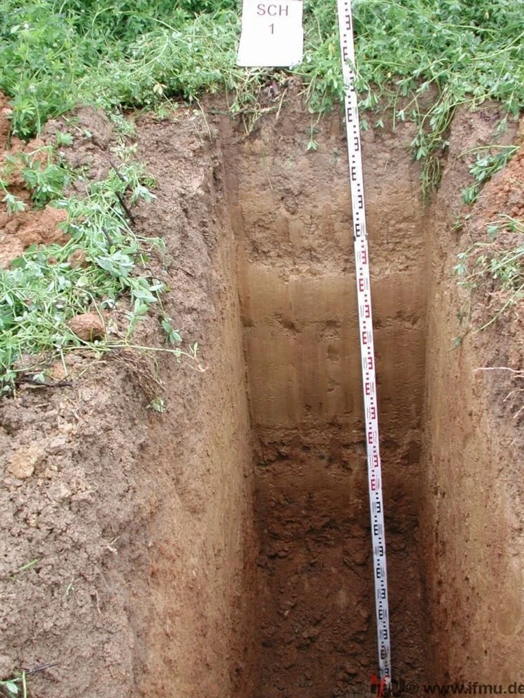

From the shores of Lake Erie to the Niagara River corridor, our Buffalo office delivers comprehensive geotechnical services tailored to the region's unique conditions. We provide full-spectrum capabilities including subsurface investigation, foundation design, slope stability analysis, and construction monitoring. Whether you're planning a commercial development downtown or a public infrastructure project in the suburbs, our team integrates local geologic knowledge with rigorous engineering to ensure safe, code-compliant outcomes. We coordinate closely with local contractors and authorities, offering reliable standard penetration testing and other field services to characterize your site from the start.

Method and coverage
Regional considerations
Our team brings consolidated regional experience across Western New York, having completed projects on the Buffalo waterfront, repurposed industrial sites, and suburban developments. We operate calibrated laboratory equipment for index and strength testing, ensuring data reliability. By maintaining close coordination with local contractors, drilling firms, and municipal review boards, we streamline project approvals. Our triaxial testing capabilities and familiarity with glacial till behavior further reinforce our ability to deliver code-compliant recommendations for foundations, retaining walls, and pavement systems.
Process video
Standards that apply
All our work in Buffalo follows US standards: ASTM D1586 for Standard Penetration Testing, ASTM D2487 for soil classification, and ASTM D4318 for Atterberg limits. Foundation design adheres to ASCE 7-22 for loads and seismic criteria, with shallow foundations per ACI 318 and deep foundations per FHWA manuals. We also reference the International Building Code (IBC) for general geotechnical reporting. Our reports are fully compliant with these standards, ensuring acceptance by local building departments and review agencies.
FAQ
What typical soil conditions are found in Buffalo, and how do they affect foundation design?
Buffalo's soils are primarily glacial till and lacustrine clays and silts over limestone/dolomite bedrock. These fine-grained soils can be compressible and have low bearing capacity if not properly evaluated. Shallow groundwater and frost depth (typically 42 inches) also influence design. We recommend site-specific subsurface exploration to determine soil strength, consolidation characteristics, and groundwater levels. Our reports provide allowable bearing pressures, settlement estimates, and recommendations for foundation type—often shallow foundations on competent till or deep foundations bearing on bedrock.
How does the proximity to Lake Erie affect geotechnical conditions in Buffalo?
Lake Erie moderates the local water table, which is generally shallow (5–15 ft) and can fluctuate seasonally. This affects excavation dewatering, basement waterproofing, and the stability of slopes near the shoreline. Additionally, lake-effect snow and freeze-thaw cycles increase frost heave potential. Our geotechnical investigations account for these factors by measuring in-situ permeability, monitoring groundwater levels over time, and recommending drainage measures and frost protection depths per local building codes.
What building codes and standards apply to geotechnical work in Buffalo, New York?
Buffalo follows the New York State Uniform Fire Prevention and Building Code (NYSUFPC), which adopts the International Building Code (IBC) with state amendments. Key geotechnical standards include ASTM methods for soil testing (e.g., D1586 for SPT, D2487 for classification) and ASCE 7-22 for loads and seismic design. Our reports are prepared in compliance with these codes, ensuring they meet the requirements of local building departments and review agencies.
What types of projects commonly require geotechnical investigations in Buffalo?
Common projects include commercial and residential developments, road and bridge construction, waterfront infrastructure, and industrial facilities. Given Buffalo's industrial history, many sites require environmental geotechnical assessments for brownfield redevelopment. Subsurface conditions such as soft clays, fill layers, and shallow bedrock necessitate careful evaluation. Our services support foundations, retaining walls, pavement design, and slope stability for both new construction and renovations.